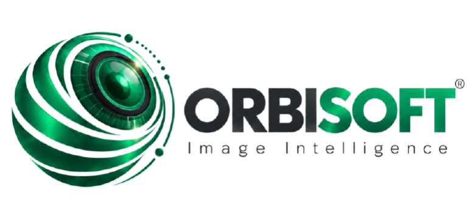
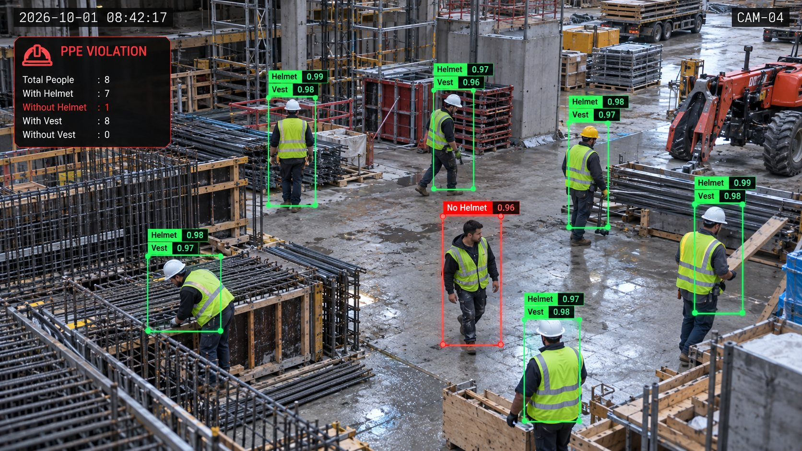
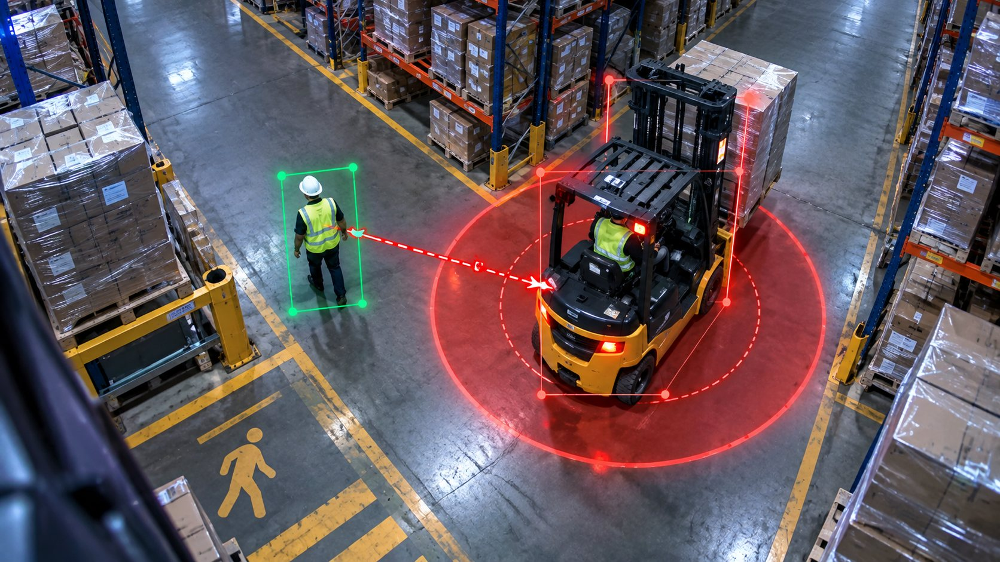
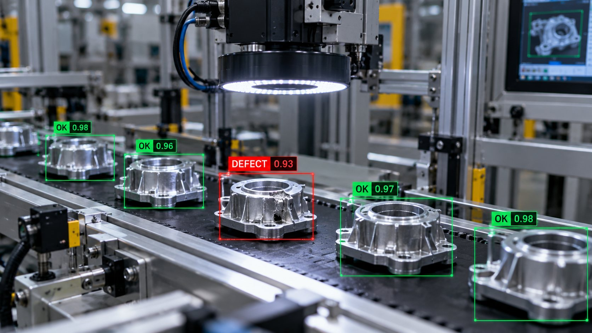
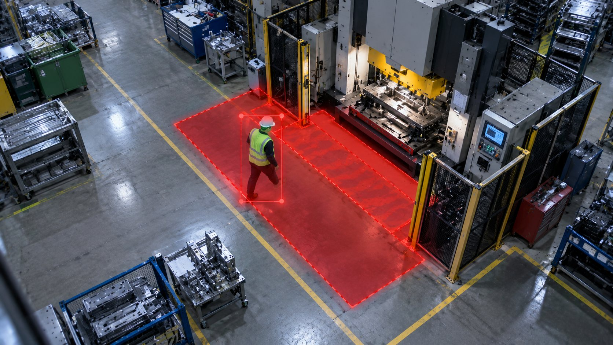

Orbisoft yapay zekâ analitiği; mevcut kameralarınızdan İSG, kalite, verimlilik ve güvenlik olaylarını gerçek zamanlı tespit eder, ölçer ve aksiyona dönüştürür.
Sahadaki kameralardan gelen görüntüyü anlamlandırılmış veriye çeviriyoruz: alarm, metrik, kanıt. Üstelik bu yapay zekânın üzerinde çalıştığı kamera, network ve sensör altyapısını da kendimiz kuruyoruz.
İSG, kalite kontrol, verimlilik, güvenlik ve lojistik için gerçek zamanlı analiz.
Tesis içinde çalışan yapay zekâ sunucusu, canlı panel, mobil bildirim ve ERP / VMS entegrasyonu.
Kamera, network, kablolama, geçiş kontrol, yangın ve ortam sensörleri — analitiğin temeli.
Manuel denetim ve kâğıt checklist ciddi ihlalleri kaçırır. Vardiya sonunda öğrenilen kaza, önlenememiş kaza demektir.
Orbisoft yapay zekâ katmanı sahadaki IP kameralara bağlanır — Hikvision, Dahua, Axis veya başka bir marka, fark etmez. Ham video değil; alarm, sayaç ve kanıt üretir.
Mevcut IP kameralar
Görüntü analizi
Uyarı, rapor, kanıt
Axis, Dahua ve Hikvision ekosistemleriyle doğrudan çalışıyoruz: kamera seçimi, kurulum, VMS entegrasyonu ve yapay zekâ analitiği tek elden, üretici desteğiyle.
Analitiğe uygun model ve lens seçimi; üretici tavsiyeleriyle kurulum.
NVR, VMS popup ve alarm akışlarıyla doğrudan, protokol seviyesinde bağlantı.
Yetkili tedarik, firmware güncelliği ve üretici destekli servis.
Araç ile personel arası mesafe anlık ölçülür; kırmızı bölge ihlali alarm üretir.
Personel konumu ve zemin bölgesi izlenir; makine önü ihlalleri kayda alınır.
Vardiya boyunca kim nerede — istasyon ve hat kurallarına uyum görünür olur.
Yetkisiz veya riskli alana giriş anında tespit; kanıt görüntüsü panelde.
Kamera 4 · Zaman damgalı kanıt görüntüsü arşivlendi
İnsan denetimi örneklemeli kalır; yapay zekâ her kareyi izler. İhlal anında ekip haberdar olur, olay arşive kanıtıyla düşer.
Yangın riskini doğuran koşulları alev çıkmadan yakalar; duman ve ısı kaynağı anında bildirilir.
Forklift ve iş makinelerinin yaya ile mesafesi, hızı ve çalışma bölgesi sürekli ölçülür.
Sekiz farklı KKD ekipmanı kişi bazında kontrol edilir; eksik ekipman kanıtıyla raporlanır.
Yolların açıklığı, sızıntılar ve unutulan nesneler tespit edilir; düzen sürekli ölçülür.
İskelet / eklem analiziyle riskli duruş ve hareketler yorumlanır; tehlikeli davranış anında görünür.
Tanımlı bölgelerde kişi sayısı, süre ve erişim kuralları izlenir; ihlal alarmla bildirilir.
Göz yorgunluğuna bağlı kaçan hatalar, vardiya sonunda fark edilen fire, son montaja sızan kusurlu parça — hepsi saniyenin altında tespit edilir.
Yapay zekâ her istasyonda aktif çalışmayı, boşta kalmayı ve makine duruşlarını ölçer. Excel'e değil, canlı panele düşer.
Onlarca kamerayı insan gözü sürekli izleyemez. Yapay zekâ tüm kanalları aynı anda okur, yalnızca anlamlı olayı izleme ekranına taşır.
Çit hattı ve dış alanda gece-gündüz tespit
Bölge + saat kuralıyla erişim denetimi
Belirli süreyi aşan bekleme / dolaşma
Bırakılan çanta, koli, ekipman
Alan doluluğu ve eşik aşımı
Turnikeden biletsiz / kartsız geçiş
Tarayıcıdan açılır, kurulum gerekmez. Her olay görüntüsü, yeri ve zamanıyla arşivlenir.




Yapay zekâ tesis içindeki Orbisoft Edge sunucusunda çalışır. Dışarıya ham video değil; olay, metrik ve kanıt karesi gider — KVKK uyumlu.
Mevcut kameralar, marka bağımsız. Gerekirse yeni kamera da kurulur.
Görüntü çözümleme, model çıkarımı, takip ve kural motoru. İnternet kesilse de çalışmaya devam eder.
Alarm, sayaç, süre, ihlal kaydı ve kanıt karesi. Şifreli iletim, rol bazlı erişim.
Tüm işlem tesis içinde; en düşük gecikme, en yüksek veri gizliliği.
Donanım yatırımı olmadan hızlı başlangıç; çok lokasyonlu yapılar için merkezi yönetim.
Analiz tesiste, raporlama ve çoklu tesis karşılaştırması bulutta.
Yeni bir ürün, farklı bir hata tipi, size özgü bir ekipman — kendi kameralarınızdan toplanan veriyle Orbisoft modelleri tesisinize uyarlanır.
Kendi kameralarınızdan gerçek koşullarda görüntü toplanır.
Hata, ekipman ve olaylar uzman ekibimizce işaretlenir.
Model eğitilir, ayrı test verisiyle doğruluk raporlanır.
Canlıya alınır; yeni örneklerle sürekli güncellenir.
Görüntü ve model tesis içinde işlenebilir.
Doğruluk ve hata analizleriyle birlikte.
Yeni sınıf ve hata tipi sonradan eklenir.
Sıcaklık, nem, toz (PM2.5) ve CO₂'yi sürekli izler. Dahili kural motoru sayesinde havalandırma, aydınlatma ve alarm doğrudan cihaz üzerinden tetiklenir — ek pano veya donanım karmaşası yok. Sensör verisi kamera analitiğiyle aynı panelde birleşir.
Uygulama alanları: üretim alanları, sistem odaları, depolar, seralar, ATM kabinleri.
VMS ekranında popup, cepte bildirim, sahada siren, ERP'de kayıt. Hepsi aynı olay akışında.
Üretim verisi tek yerde — çift giriş yok.
Olay anında izleme ekranında görüntüsüyle açılır.
Geri bildirim anında cebinizde.
Alarm çaldırır, cihazları otomatik devreye alır.
| Kriter | Manuel denetim | Orbisoft |
|---|---|---|
| Kapsam | ✕Örneklemeli turlar, kör noktalar | ✓7/24, tüm kamera alanı |
| Tespit süresi | ✕Saatler — çoğu vardiya sonu | ✓Anlık (0.1–3 sn) |
| Kanıt | ✕Kâğıt checklist, hafıza | ✓Otomatik görüntü + zaman damgası |
| Raporlama | ✕Excel, gecikmeli | ✓Canlı panel, saatlik KPI |
| Ölçek | ✕Personel sayısıyla sınırlı | ✓Kamera başına sürekli izleme |
| Maliyet | ✕Sürekli iş gücü, hat arttıkça artar | ✓Mevcut altyapı + modüler lisans |
| İSG uyumu | ✕Reaktif, olay sonrası | ✓Proaktif alarm ve dijital iz |
İnsan denetimi tamamen kalkmaz — kritik kararlar yönetimde kalır; rutin ve sürekli kontrol yapay zekâya devredilir.
6 aylık kalite modülü pilotu
Hat içi otomatik ayırma
Vardiya verimlilik takibi
Palet sayım sapması alarmı
Müşteri adları paylaşılmadan, anonim saha projeleri. Hizmet verilen sektörler: elektronik, otomotiv, tekstil, gıda, kimya, savunma, metal, ambalaj, lojistik.
Kameranız eksikse, network yetersizse, sensör yoksa sorun değil — projelendirme, kurulum ve bakım aynı ekipten.
Cat6/6A, fiber omurga, test & sertifikasyon
Switch, router, kablosuz ağ, VLAN tasarımı
Rack, veri odası, düzenli kablo yönetimi
IP santral, dahili hatlar, çağrı yönetimi
Bölgesel anons, acil durum seslendirme
Kamera, NVR, izleme merkezi kurulumu
Kartlı / biyometrik geçiş, turnike, PDKS
Perimetre algılama, bariyer, alan koruma
Firewall, segmentasyon, güvenli erişim
Adresli algılama, panel, sesli-ışıklı uyarı
Gazlı söndürme, pano & kabin içi sistemler
Bina otomasyonu, hemşire çağrı, saat sistemleri
Yapay zekânın doğruluğu doğru kamera açısı, yeterli bant genişliği ve kesintisiz enerjiyle başlar. Bu yüzden altyapıyı da biz kuruyoruz.
Analitiğe uygun açı, lens ve kayıt planı
Yapısal kablolama, kabinet, siber güvenlik
Kartlı / biyometrik geçiş, turnike, PDKS
Adresli algılama, gazlı söndürme, anons
Belirsizlik yok — her aşama net teslimat, ölçülebilir KPI ve yazılı pilot raporu ile kapanır.
Hat haritası, mevcut kameralar ve altyapı, öncelikli risk alanları birlikte çıkarılır.
Gerekirse eksik kamera / network tamamlanır; edge bağlantısı ve alarm eşikleri ayarlanır.
Canlı panel, günlük KPI; vardiya bazlı İSG, kalite ve verimlilik takibi.
Ölçülebilir sonuçlar, ROI özeti ve yaygınlaştırma planı sunulur.
Ücretsiz keşif görüşmesiyle altyapınızı ve önceliklerinizi çıkaralım; 30 günlük pilot planını birlikte hazırlayalım.
Dijitalpark Teknokent firması · Axis · Dahua · Hikvision teknoloji partneri